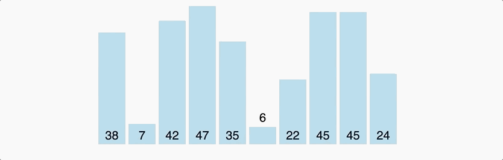
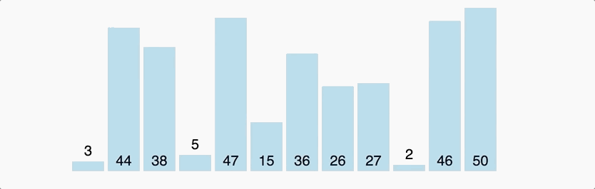

# Sorting Algorithm
## Bubble Sort
Bubble Sort is the simplest sorting algorithm that works by repeatedly swapping the adjacent elements if they are in wrong order.
```js
((arr)=>{
for (let i = arr.length -1; i > 0; i--){
for (let j = 0; j < i; j++){
if (arr[j] > arr[j+1]){
let temp = arr[j];
arr[j] = arr[j+1];
arr[j+1] = temp;
}
}
}
return arr;
})(Array(100).fill(null).map(() => Math.round(Math.random()*100)));
```

## Selection Sort
It is the reverse of Bubble Sorting.
```js
((arr)=>{
for (let i=0;i
Math.round(Math.random()*100)));
```

## Quick Sort
A typical implementation of Divide-and-Conquer Method, selecting a pivot and using it to split the array to two part.
Normally, its time complexity is n(nlogn). In worst situation that the first selected pivot is the extremum of the array, its time complexity is n(n^2).
```js
(_arr=>{
const quickSort = arr => {
if (arr.length < 2) return arr;
const pivot = arr.pop();
return [...quickSort(arr.filter(item => item < pivot)), pivot, ...quickSort(arr.filter(item => item >= pivot))];
};
return quickSort(_arr);
})(Array(100).fill(null).map(() => Math.round(Math.random()*100)));
```
## Insert Sort
## Shell Sort
## Heap Sort
## Merge Sort
## Bucket Sort